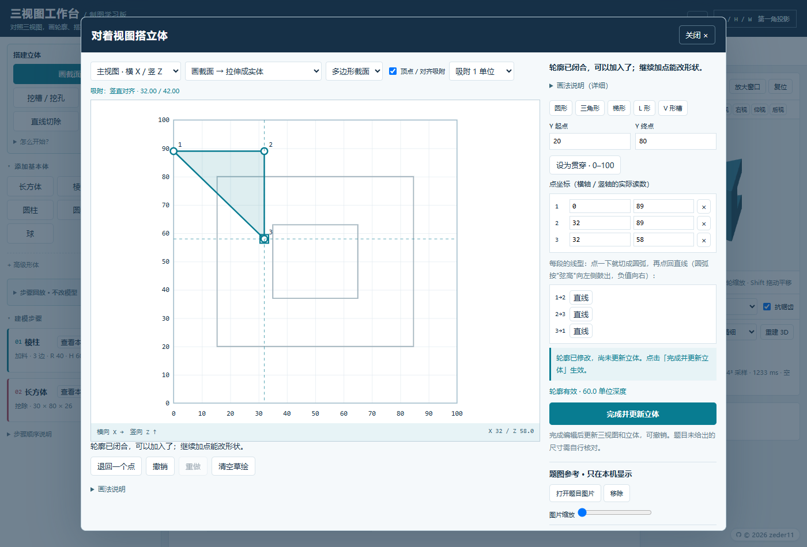

三视图工作台three-view workbench · 工程制图学习工具
描截面、拉伸、挖槽、切一刀，用视图把立体一步步搭出来，再回头核对三视图。离线单文件，双击就能用。
PolyForm NC · v0.4.0
下载后若浏览器提示“文件可能有害”，选保留即可——它只是普通的本地网页，不联网、不上传数据。

双端相切练习：两端不能分别调整的圆弧，导入后编辑第1步，使用「第2段圆弧 · 双端一起相切」。可先检查固定端点，或预览保持半径、沿两侧直线移动切点，核对坐标及移动距离后再确认；可撤销。单端练习：有折角的圆弧；准确相切对照：光滑圆弧接直线。
局部保留示例：圆柱下段缩径 · 方柱下段收窄，两者都保留原有中心孔。
持续相切示例：下载模型 JSON，在工作台导入后将圆半径20改为22查看联动。
原生圆弧端点示例：下载模型 JSON，导入后可编辑弦高核对截面与立体。
圆弧端点链式联动示例：下载模型 JSON，导入后将第1步圆半径20改为22，查看后两步联动。
新示例：椭圆投影检查（编辑第2步查看参照） · 球面持续相切（将球半径20改为22）。
本次更新
- 操作流程收尾：顶部按「模型文件」「导出图纸」「辅助工具」分组；步骤只展开当前编辑项；草绘先「采用到轮廓」再「完成并更新立体」，手机上可直接回到草绘图
- 界面精简：常用建模入口更紧凑，手机图纸更早出现；圆弧连接按整段集中显示，单端调整和长说明按需展开，关键预览尺寸仍在确认前保留
- 平滑圆弧修正：圆弧接直线处不再有多余分界线；拖动预览在最后一个指针松开后才恢复轮廓；新增「保留轮廓 → 切掉外侧」局部削切，原有孔槽保留（含此操作的 v6 模型请用本版应用编辑）
能做什么
- 描截面拉伸：三角形、梯形、L 形，直线与圆弧可逐段组合；圆弧接缝不会画成一排棱线
- 画截面挖除：通槽、盲槽、圆孔（真圆柱刀具）
- 视图画线切割：切平面在该视图上积聚成直线
- 三点定截平面：两个视图定位，自动预览切后立体
- 步骤回放：逐刀查看中间结果，不占撤销记录
- 题图叠图：铺在草稿纸下，两点标定后直接描
- 点位对应：点一处，另两视图标出长对正／高平齐／宽相等
- 轮廓显示：按原始曲面生成连续轮廓，去除网格毛边；被遮挡棱用虚线显示
- 3D 质量：快速 42³／精细 84³／超精细 128³，调整实体细腻度；轮廓清晰度独立
- 中英切换：右上角一键切换，导出图纸跟着换语言
- 这条线是什么：描点并补充多视图约束，对比候选的三视图变化，确认后采用
- 命名记录：把模型连视角、显示模式和缩略图存进浏览器本地，起名如
3-53，随时回看
先说清楚：它是采样法计算，不是精确 CAD。比一个采样格还窄的槽或薄片可能消失（可调高精度）；立体网格比三视图粗，只用来理解，想更顺可以切「超精细 · 128³」。建议当核对工具，不要直接把结果当作业答案。